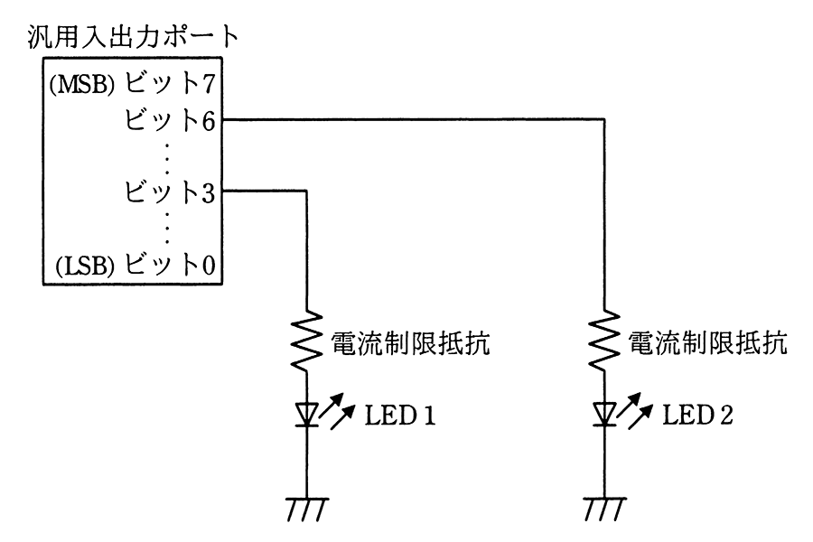

マイコンの汎用入出力ポートに接続されたLED1を，LED2の状態を変化させずに点灯したい。汎用入出力ポートに書き込む値として，適切なものはどれか。ここで，使用されている汎用入出力ポートのビットは全て出力モードに設定されていて，出力値の読出しが可能で，この操作の間に汎用入出力ポートに対する他の操作は行われないものとする。

ア 汎用入出力ポートから読み出した値と16進数の08との論理積
イ 汎用入出力ポートから読み出した値と16進数の08との論理和
ウ 汎用入出力ポートから読み出した値と16進数の48との論理積
エ 汎用入出力ポートから読み出した値と16進数の48との論理和